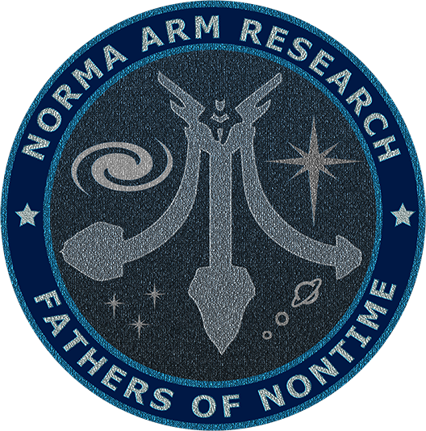
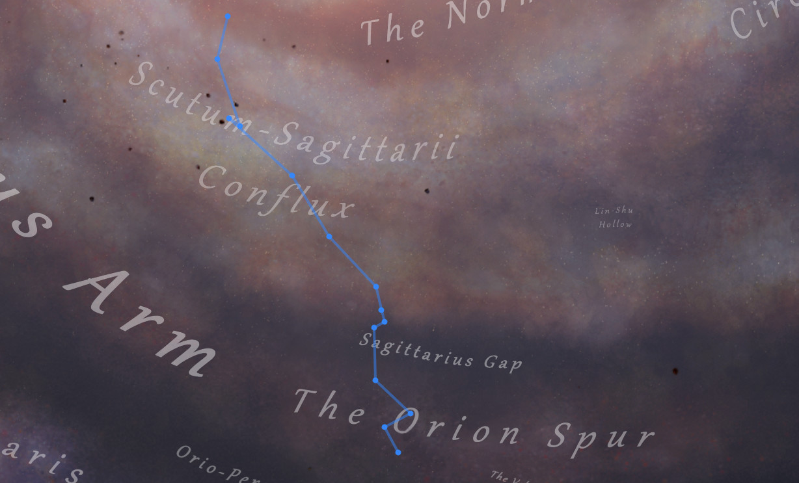

Expedición FON 2
El Amouranth Observatory of Space Stuff (AOSS) es un organismo dependiente del Ministerio de Ciencia y Agricultura del Imperio FoN. Durante los últimos meses el AOSS ha venido detectando extrañas transmisiones provenientes de la región galáctica denominada Norma Arm. Estas transmisiones consisten en tenues susurros ininteligibles que se alternan con una diversidad de sonidos que no parecen tener estructura ni orden. Para investigar este misterio el AOSS ha creado la Iniciativa Norma Arm, una misión de exploración a lo USS Enterprise abierta a todos los comandantes de FoN con espíritu aventurero (aunque es posible que el nivel de aventura no pase de lo contemplativo) 
La región Norma Arm se encuentra entre Sagitarius A y la burbuja, a unos 17.000 años luz de la misma. Es por ello que el AOSS ha decidido organizar el viaje en varias fases para que los ocupados comandantes de FoN se impliquen en la medida que puedan o les apetezca.
Fase 1: El viaje a Norma Arm
En esta primera fase se establecen 14 puntos de interés que visitar en nuestro camino a Norma Arm. Hemos calculado hacerlo en un mes yendo a un ritmo tranquilo (aunque se puede hacer mucho más rápido en modo heavy, también llamado modo Darthluis). Pero los tiempos no están escritos en piedra. La idea es pararse en cada punto, explorar los alrededores y, si se encuentra algo interesante, compartirlo con los demás.
Para aquellos de vosotros que uséis el EDDiscovery, tenéis una ruta directamente importable que os podeís descargar haciendo click aquí. Tan solo hay que descargar el fichero e importarlo en EDDiscovery desde la pestaña Expedition y seleccionar Import File. Una vez cargado el fichero, pulsar el botón Show on 3D Map. Eso os permitirá ver la ruta sobre el mapa 3D de la galaxia.
A continuación el listado de puntos con una breve descripción.
| Waypoint | Sistema | Distancia WP | Descripción |
| 0 | Naunin | Salida en grupo | |
| 1 | IC 1287 Sector BQ-Y d9 | 880,56 | Gantan of Orion |
| 2 | HR 6164 | 907,53 | The View |
| 3 | HD 175876 | 1580,85 | Heaven's Lathe |
| 4 | Droju UA-D d13-9 | 1624,56 | Delos |
| 5 | Traikaae CH-Y c10 | 609,08 | El Laberinto |
| 6 | Lagoon Sector NI-S b4-10 | 381,36 | Amudsen Terminal |
| 7 | Trifid Sector OI-S b4-12 | 732,19 | Lucifer's Lair |
| 8 | Eagle Sector IR-W d1-117 | 2110,41 | Eagle's Landing |
| 9 | Pru Aescs HW-S b31-2 | 2198,84 | Conflux Abandoned Settlements |
| 10 | Skaude AA-A h294 | 2650,01 | Skaude's Collection of Wonders |
| 11 | Skaude AA-A h216 | 663,84 | Garmany's Treasure |
| 12 | Clooku QS-S d4-145 | 2169,40 | Roseum Somnium |
| 13 | Gru Hypue AA-A g4 | 1394,12 | Jo Ella's Flares |
| 14 | Blaa Phoe NC-D d12-230 | 1936,14 | Espiral de la muerte |
La Expedición FON 2 cuenta con una Audioguía. Haz click aquí para acceder a ella. 
Fase 2: Norma Arm
Si aún te quedan ganas de explorar después de la fase anterior puedes perderte en esta región de la galaxia plagada de estrellas. Iremos compartiendo lugares insólitos de esta región para visitarlos, en compañía si es posible, o en solitario si tu horario no te lo permite. Duración de esta fase: hasta que nos aburramos. Que con la exploración puede ser cinco minutos o unas semanas.
Fase 3: Country Roads, Take Me Home
La vuelta a casa. Esto ya depende de cada uno. Muchos de los que vamos no hemos visitado Sagitarius A, así que igual nos pasamos antes de volver. También está Colonia. El retorno puede ser una vuelta larga o, si se ha apoderado de ti la locura espacial, puede ser tan sencillo como apretar el botón de autodestrucción. No lo recomendamos. Perderás todos los datos de exploración y a saber dónde apareces.
Cuándo y Dónde
La fecha de salida será el 27 de abril a las 21:00 hora española. La fecha oficial de llegada será el domingo 8 de junio. Quien no esté aún preparado para explorar debería tener tiempo para desbloquear los módulos guardianes de aumento de rango de salto. Cualquier duda, no dudéis en preguntar por el canal de Telegram o el Discord de Fathers of Nontime.
Ministerio de Ciencia y Agricultura